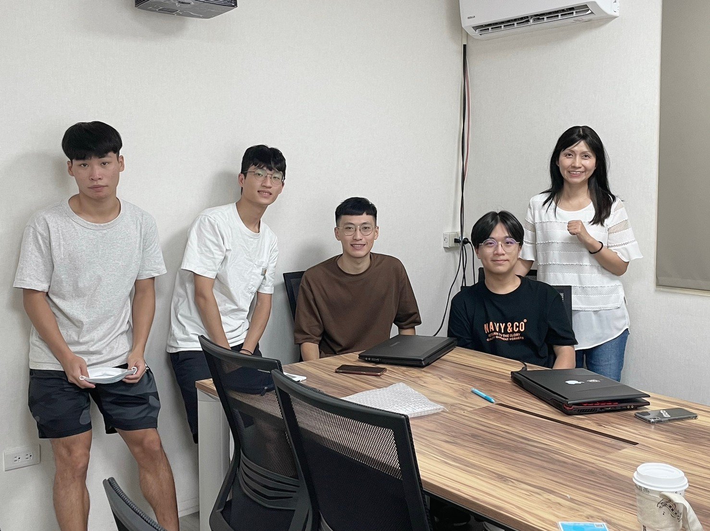
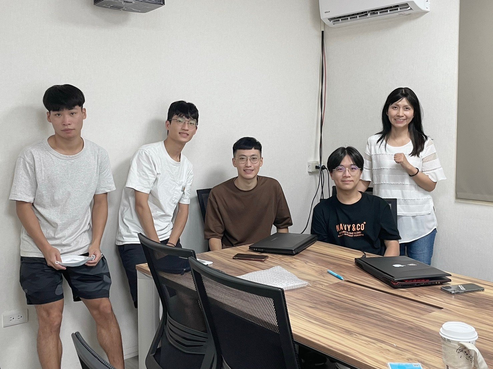

2021, Patere summer internship
 Home

Home

I am an intern at
Patere in the summer of 2021.
Projects:
Object detection:
I trained a MASK-RCNN
model to get the precise position of the target. Then I use Hough-line detection
to obtain the final two-dimensional coordinates.
This work is part of Ward assist device project.
Tool: C++, Python, OpenCV, TensorFlow
Text detection:
TextFuseNet
is a powerful text detection model. we tried to develop some creative project like Artificial Intelligence Judgment System
This work is to support a project in full-stack development team.
Tool: Python, OpenCV, TensorFlow, PyTorch
Object detection - Practice:
This is a quiz. When I first joined the company, the boss wanted to know my ability in image processing
In this work, I cope with different images by edge detection(Canny), smoothing filter, and Histogram equalization
[Github]
Tool: C++, OpenCV